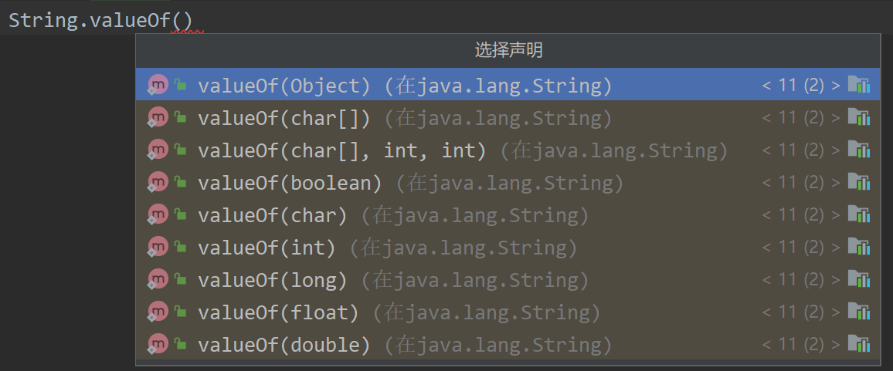
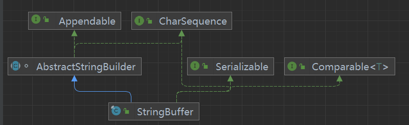
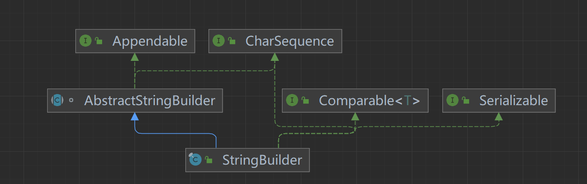

13常用类
13.1 包装类¶
2022年6月17日
16:07
1. 包装类概述¶
- 什么是包装类: 包装类针对8种基本数据类型, 设置了相对应的引用类型
2. 基本数据类型和其对应的包装类¶
| 基本数据类型 | 包装类 |
|---|---|
| boolean | Boolean |
| char | Character |
| byte | Byte |
| short | Short |
| int | Integer |
| long | Long |
| float | Float |
| double | Double |
3. 包装类与基本数据类型的相互转化¶
1. 手动 jdk5前使用, jdk5后==废弃==
<font color='green'>手动装箱: Integer integer1 = new Integer(250);</font>
<font color='green'>或者用Integer.valueOf()方法</font>
<font color='green'>手动拆箱: int i1 = integer1.intValues();</font>
2. 自动装箱: Integer integer2 = i; //底层使用的是`valueOf(i)`
自动拆箱: int i2 = integer2; //底层使用的是`intValue()`
4. 包装类和String类的相互转化¶
1. 包装类(Integer integer = 250) -> String
```java
String str1 = integer + "";
String str2 = integer.toString();
String str3 = String.valueOf(Integer);
```
* [String.valueOf()](#String.valueOf)
2. String(String str4 = "12345") -> 包装类(Integer)
5. Integer类和Character类的常用方法¶
| Integer.MIN_VALUE | 返回int最小值 |
|---|---|
| Integer.MAX_VALUE | 返回int最大值 |
| Character.isDigit('a') | 判断是不是数字 |
| Character.isLetter('a') | 判断是不是字母 |
| Character.isUpperCase('a') | 判断是不是大写 |
| Character.isLowerCase('a') | 判断是不是小写 |
| Character.isWhitespace('a') | 判断是不是空格 |
| Character.toUpperCase('a') | 转成大写 |
| Character.toLowerCase('A') | 转成小写 |
6. IntegerCache¶
1. 引入:
Integer integer1 = n; Integer integer2 = n;
当-128\<= n \<= 127 时, integer1 == integer2 true;
当n\<-128 \|\| n\>127 时, integer1 == integer2 false;
为什么?
2. 自动装箱调用valueOf方法, 会使用到IntegerCache类
```java
public static Integer valueOf(int i) {
if (i \>= IntegerCache.low && i \<= IntegerCache.high)
return IntegerCache.cache[i + (-IntegerCache.low)];
return new Integer(i);
}
```
3. IntegerCache是Integer类中的静态内部类，用于缓存数据便于节省内存、提高性能。
IntegerCache内部的cache数组 在static块部分 初始化了值为IntegerCache.low 到 IntegerCache.high 的Integer对象
`IntegerCache.low = -128`
`IntegerCache.high = 127`
除了Integer之外，在其他包装类(例如：Byte，Short，Long等)中也存在类似的设计。
String.valueOf()¶
重载了很多类型

在这里, 使用的是参数列表为Object的方法
13.2 String类¶
2022年6月18日
12:59
一、String类¶
-
String类介绍 \<java.lang.String> - String类用于保存字符串 - 字符串常量对象是用双引号("")括起的字符串序列,如"hello world" - String的字符使用Unicode字符编码, 一个字符(不论是字母还是汉字)占2Byte - String常用构造器: 1. String str = new String(); //空字符串 2. String str = new String(String otherString); 3. String str = new String(char[] other); 4. String str = new String(char[] other, int startIndex, int count);
-
创建String对象的两种方式
1. 直接赋值 String s1 = "哈哈哈";
先从常量池中查看有没有"哈哈哈"数据空间, 如果有, 则s1直接指向; 否则创建一个"哈哈哈", 然后s1再指向"哈哈哈" s1最终指向的是==常量池=="哈哈哈"的空间地址 <font color='#66ccff'>e.g.</font> `String a = "abc", b = "abc";` `System.out.println(a == b);` <font color='red'>//true</font>2. 调用构造器 String s2 = new String("哈哈哈");
先在堆中创建空间, 里面维护了==value属性==, 指向常量池的"哈哈哈"空间 如果堆中没有"哈哈哈", 创建再指向"哈哈哈" s2最终指向的是==堆中==的value的空间地址  * <font color='#66ccff'>e.g. </font>`String s1 = new String("abc")`` * ``String s2 = new String("abc");` * System.out.println(s1 == s2);`<font color='red'> //false</font> 3. intern方法 在调用"ab".intern()方法的时候会返回"ab"，但是这个方法会首先检查字符串池中是否有"ab"这个字符串，如果==存在则返回这个字符串的引用==，否则就将这个字符串==添加到字符串池==中，然后返回这个字符串的引用。 -
字符串的特性
-
String是一个final类, 代表不可变的字符序列
-
字符串是不可变的, 一个字符串对象一旦被分配, 其内容就不可变
e.g.1
String str = "abc" + "def"; //创建了1个对象e.g.2
String str1 = "abc";String str2 = "def";String str3 = "abcdef";String str4 = str1 + str2; //创建了3个对象
因此在对String进行修改时，会产生大量地副本对象残留在内存中，降低效率
如果要对String做大量修改，就不要使用String
-
-
-
说明:
String类是用于保存字符串常量的。所以每次更新都需要重新开辟空间来存储， 效率较低， 因此提供StringBuilder和StringBuffer来增强String的功能，提高效率
-
常用方法一览：
-
| equals | 区分大小写, 判断内容是否相等 |
|---|---|
| equalsIgnoreCase | 不区分大小写, 判断内容是否相等 |
| length | 获取字符个数(即字符串长度) |
| indexOf | 获取字符在字符串中第一次出现的索引(从0开始), 未找到则返回-1 |
| lastIndexOf | 获取字符在字符串中最后一次出现的索引(从0开始), 未找到则返回-1 |
| substring | 截取指定索引范围的子串 substring(4) 从4开始截取后面都有内容 substring(0, 5) [0, 5), 长度为4 |
| trim | 去除前后空格 |
| charAt | 获取某索引处的字符(用来替代str[index]) |
| 接下来的方法均是返回一个操作后的对象, 而非对调用方法的对象进行操作 | |
| toUpperCase toLowerCase | 转换大小写 |
| concat | 拼接字符串 |
| replace | 替换字符串中的字符 |
| split | 分割字符串 注意： . 、 $、 | 和 等转义字符，必须得加 \\。 注意：多个分隔符，可以用 | 作为连字符。 |
| compareTo | 比较两个字符串大小 |
| toCharArray | 转换成字符串数组 |
| format | 格式字符串 (和c的printf相似) |
二、StringBuffer类¶
-
StringBuffer类介绍 - java.lang.StringBuffer代表可变字符序列, 可以对字符串内容进行增减 - 很多方法与String相同, 但StringBuffer是可变长度的 - StringBuffer是一个容器
-
StringBuffer类本质

- StringBuffer 的直接父类是AbstractStringBuilder
\-\>在父类中AbstractStringBuilder 有属性char[] value,不是final, 该value数组存放字符串内容, 因此==存放在堆中== \-\>因为StringBuffer 字符内容是存在char[] value, 所以变化(增加/删除)不用每次都更新地址(即不是每次创建新对象)， 所以效率高于String- StringBuffer 实现了==Serializable接口==, 即StringBuffer 的对象可以串行化(对象可以网络传输,可以保存到文件)
- StringBuffer 是一个final 类，不能被继承
-
StringBuffer与String的区别
- String保存的是==字符串常量(存放在常量池)==, 里面的值不能更改, 每次String类的更新实际上是更改地址, 效率较低
- StringBuffer保存的是==字符串变量(存放在堆中)==, 里面的值可以更改, 每次StringBuffer的更新实际上可以更新内容, 不用每次都更新地址, 效率较高
-
String和StringBuffer的转化
-
String->StringBuffer 1. 构造器
`StringBuffer stringBuffer = new StringBuffer(str);`2. 使用
StringBuffer.append方法`StringBuffer stringBuffer = new StringBuffer(str);` -
StringBuffer->String
1. 构造器
`String str = new String(stringBuffer);`2. toString方法
`String str = new stringBuffer.toString();`
-
-
StringBuffer常用方法
| 方法 | 说明 |
|---|---|
| append | 在对象==后面增加==字符/字符串 stringBuffer.append("0xxx"); //01234567890xxx |
| delete | ==删除==索引为[left, right)的字符 right可以越界 stringBuffer.delete(10,1000); //0123456789 |
| replace | ==替换==索引为[left, right)的字符 stringBuffer.replace(1,3,"0"); //003456789 |
| indexOf | 查找==指定的子串在字符串第一次出现的索引, 如果找不到则返回-1 ==stringBuffer.indexOf("8")); //7 |
| insert | ==插入==在索引处插入指定字符串(这个索引处的元素向后移) stringBuffer.insert(2,"12"); //00123456789 |
| length | 返回字符串==长度== |
-
注意点
String str = null;StringBuffer sb1 = new StringBuffer(); sb.append(str);这里, 内部调用了AbstractStringBuilder的appendNull()方法, 在增加了"null",从而避免异常
StringBuffer sb2 = new StringBuffer(str);错误 抛出NullpointerException
三、StringBuilder类¶
-
StringBuilder类介绍
-
是一个可变的字符序列
-
此类提供一个与StringBuffer兼容的API, 但不能保证同步(StringBuilder 不是线程安全)。该类被设计用作 StringBuffer的一个简易替换，用于字符串缓冲区被单个线程使用的时候。如果可能，建议优先采用该类因为在大多数实现中，它比 StringBuffer 要快
-
在 StringBuilder上的主要操作是 append和 insert 方法，可重载这些方法,以接受任意类型的数据。
-
-
StringBuilder本质

- StringBuilder 继承AbstractStringBuilder 类
- 实现了Serializable接口 ,说明StringBuilder 对象是可以串行化( 对象可以网络传输,可以保存到文件)
- StringBuilder 是final 类, 不能被继承
- StringBuilder 对象字符序列仍然是存放在其父类AbstractStringBuilder 的char[] value;
- 因此，字符序列是堆中
- StringBuilder 的方法, 没有做互斥的处理, 即没有synchronized 关键字, 因此只能在单线程的情况下使用
四、String、StringBuffer和StringBuilder的选择和比较¶
-
String、StringBuffer和StringBuilder的选择
-
StringBuilder和StringBuffer很相似， 均为可变的字符序列， 且方法也一样
-
String：不可变字符序列，效率低，但复用率高
- StringBuffer：可变字符序列， 效率较高，线程安全
- StringBuilder：可变字符序列，效率最高，但线程不安全
-
-
String、StringBuffer和StringBuilder 的选择
- 如果字符串存在大量的修改操作，一般使用StringBuffer 或StringBuilder
- 如果字符串存在大量的修改操作，并在单线程的情况,使用 StringBuilder
- 如果字符串存在大量的修改操作，并在多线程的情况,使用 StringBuffer
- 如果我们字符串很少修改，被多个对象引用，使用String,比如配置信息等
-
StringBuilder 的方法使用和StringBuffer一样,不再说.¶
13.3 Math方法¶
2022年6月18日
16:38
-
Math类介绍 \<java.lang.Math>
Math类包含用于执行基本数学运算的方法，如初等指数、对数、平方根和三角函数
-
常用方法
| abs | 求绝对值(重载了很多类型) |
|---|---|
| pow | 求幂 |
| ceil/floor | 向上取整/向下取整 |
| round | 四舍五入 |
| sqrt | 开平方 |
| random | 求随机数(返回一个[0,1)的随机小数,然后再加以处理) |
| max/min | 返回最大值/最小值 |
13.4Arrays类¶
2022年6月20日
12:04
1. Arrays类介绍¶
Arrays包含了一系列静态方法, 用于管理和操作数组(如排序和搜索)
2. 常用方法¶
-
toString：返回数组的字符串形式Arrays.toString(arr); -
sort：排序
自定义排序：传入①待排数组 ②实现了==Comparator接口==（实现compare方法）的匿名内部类\<接口编程>
Arrays.sort(integers, new Comparator<Integer>(){
@Override
public int compare(Integero1, Integero2){
return o1 - o2;
}
});
- 注意：compare返回值为int， 而比较（\</>）的返回值为boolean， 所以应该使用减法
升序：o1 - o2 / o1.compareTo(o2)， 降序o2 - o1 / o2.compareTo(o1)
原因: 底层binarySort调用了compare方法, 将compare返回值与0比较
while(left < right){
int mid = (left + right)>>>1;
if(c.compare(pivot,a[mid]) < 0)
right = mid;
else
left = mid + 1;
}
binarySearch: 二分法查找目标值, 要求数组已排序
- 如果数组中[fromIndex, toIndex),找到,返回该元素在数组中的索引; 未找到该元素, 返回 -(low + 1) -(第一个大于该元素的位置 + 1)
copyOf: 数组元素复制
- 从arr数组中, 拷贝arr.length的元素到newArr中去
如果拷贝长度 > arr.length 就在后面补==null==
如果拷贝长度 \< 0 抛出异常 NegativeArraySizeException
- 方法底层使用的是System.arraycopy()
fill: 数组元素填充
equals: 比较两个数组元素内容是否完全一致
asList: 将一组值转换为list(集合)
13.5System类¶
2022年6月21日
11:43
-
System类介绍 \<java.lang.System>
System 类位于 java.lang 包，代表当前Java程序的运行平台，系统级的很多属性和控制方法都放置在该类的内部。由于该类的构造方法是 private 的，所以无法创建该类的对象，也就是无法实例化该类。
-
System类常见方法 1. exit: 退出当前程序
2. arraycopy: 复制数组元素, 比较适合底层调用, 一般使用的是Arrays.copyOf来复制数组
```java int[] src = {1,2,3}; int[] dest; System.arraycopy(src, 0, dest, 0, src.length); ``` `src`: the source array源数组 `srcPos`: 从源数组的哪个位置开始拷贝 `dest`: the destination srray目标数组 `destPos`: 将源数组的数据拷贝到目标数组的哪个索引 `length`: 从源数组拷贝多少个数据到目标数组1. currentTimeMillens: 返回当前时间距离1970-1-1(格林威治时间（GMT）)的毫秒数
`System.currentTimeMillens();`2. gc: 运行垃圾回收机制
`System.gc();`
13.6BigInteger和BigDecimal类¶
2022年6月21日
12:22
-
BigInteger和BigDecimal介绍 \<java.math.BigInteger/BigDecimal>
BigInteger适合保存比较大的整型(高精度整数)
BigDdecimal适合保存精度更高的浮点型(高精度小数)
-
常用方法 1. add 加 2. subtract 减 3. multiply 乘 4. divide 除
13.7日期类¶
2022年6月21日
18:59
1. 第一代日期类-Date类¶
- Date: 精确到毫秒, 代表特定的瞬间, 但只能按照固定格式输出
- SimpleDateFormat: 格式和解析日期的类 \
它允许进行格式化(日期->文本), 解析(文本->日期)和规范化
| 字母 | 日期或时间元素 | 表示 | 示例 |
|---|---|---|---|
| G | Era 标志符 | Text | AD |
| y | 年 | Year | 1996; 96 |
| M | 年中的月份 | Month | July; Jul; 07 |
| w | 年中的周数 | Number | 27 |
| W | 月份中的周数 | Number | 2 |
| D | 年中的天数 | Number | 189 |
| d | 月份中的天数 | Number | 10 |
| F | 月份中的星期 | Number | 2 |
| E | 星期中的天数 | Text | Tuesday; Tue |
| a | Am/pm 标记 | Text | PM |
| H | 一天中的小时数（0-23） | Number | 0 |
| k | 一天中的小时数（1-24） | Number | 24 |
| K | am/pm 中的小时数（0-11） | Number | 0 |
| h | am/pm 中的小时数（1-12） | Number | 12 |
| m | 小时中的分钟数 | Number | 30 |
| s | 分钟中的秒数 | Number | 55 |
| S | 毫秒数 | Number | 978 |
| z | 时区 | General time zone | Pacific Standard Time; PST; GMT-08:00 |
| Z | 时区 | RFC 822 time zone | -0800 |
Date date1 = new Date(); //获取当前系统时间
Date date2 = new Date(1003939200000L); //按指定毫秒数得到时间
System.out.println(date2); //Thu Oct 25 00:00:00 CST 2001
//格式化日期
SimpleDateFormat sdf = new SimpleDateFormat("yyyy年MM月dd日 HH:mm:ss EEEE");
System.out.println(sdf.format(date1)); //2022年06月21日 20:58:49 星期二
//解析文本
SimpleDateFormat sdf2 = new SimpleDateFormat("yyyy年MM月dd日");
String str = "2001年10月25日 我也不知道具体时间";
try{ //必须对可能抛出的java.txt.ParseException异常进行处理
Date parse = sdf2.parse(str);
System.out.println(parse.getTime()); //1003939200000
} catch (ParseException parseException) {
System.out.println("日期格式错误");
}
2. 第二代日期类-Calendar类（）¶
- 源码:
-
Calendar类是一个==抽象类==
它为特定瞬间与一组诸如 YEAR、MONTH、DAY_OF_MONTH、HOUR等日历字段之间的转换提供了一些方法并为操作日历字段(例如获得下星期的日期)提供了一些方法
- 常用:
get(Calendar.YEAR);…Calendarc=Calendar.getInstance();//创建日历对象 //获取日历对象的某个日历字段 System.out.println("年:" + c.get(Calendar.YEAR)); System.out.println("月:" + (c.get(Calendar.MONTH) + 1)); System.out.println("日:" + c.get(Calendar.DAY_OF_MONTH)); System.out.println("小时:" + c.get(Calendar.HOUR)); System.out.println("分钟:" + c.get(Calendar.MINUTE)); System.out.println("秒:" + c.get(Calendar.SECOND)); //Calendar没有专门的格式化,需要自己手动组合 System.out.println( c.get(Calendar.YEAR) + "-" + (c.get(Calendar.MONTH) + 1) + "-" + c.get(Calendar.DAY_OF_MONTH) + " " + c.get(Calendar.HOUR_OF_DAY) + ":" + c.get(Calendar.MINUTE) + ":" + c.get(Calendar.SECOND)); //24小时制 12小时用HOUR
3. 第三代日期类-LocalDate、LocalTime、LocalDateTime¶
-
前两代日期类的不足
JDK 1.0中包含了java.util.Date类，但是它的大多数方法已经在JDK 1.1引入Calendar类之后被弃用了。
而Calendar也存在问题:
- 可变性: 像日期和时间这样的类应该是不可变的。
- 偏移性: Date中的年份是从1900开始的,而月份都从0开始
- 格式化:格式化只对Date有用，Calendar则不行。
- 此外，它们也不是线程安全的;不能处理闰秒等(每隔2天，多出1s).
-
LocalDate：日期(年月日) 只包含日期，可以获得日期字段
LocalTime: 时间(时分秒) 只包含时间, 可以获得时间字段
LocalDateTime: 日期 + 时间(年月日 时分秒) 可以获得时期和时间字段
\
//用now()方法返回当前日期/时间的对象 LocalDateTime ldt = LocalDateTime.now(); System.out.println(ldt); //2022-06-22T16:31:43.232888500 //使用DateTimeFormatter对象来格式化 DateTimeFormatter dateTimeFormatter=DateTimeFormatter.ofPattern("yyyy年MM月dd日HH:mm:ss"); System.out.println(dateTimeFormatter.format(ldt)); //也可以自己组合 System.out.println("年" + ldt.getYear()); System.out.println("月" + ldt.getMonth()); System.out.println("日" + ldt.getDayOfMonth()); System.out.println(ldt.getDayOfWeek()); System.out.println(ldt.getDayOfYear()); //还提供了plus和minus方法对时间进行加减 LocalDateTime ldt2 = ldt.plusDays(890); System.out.println("890天后=" + dateTimeFormatter.format(ldt2)); System.out.println("12345678分钟前=" + dateTimeFormatter.format(ldt.minusMinutes(12345678))); -
DateTimeFormatter 格式日期类 \<java.time.format>
-
类似于SimpleDateFormat
-
使用:
-
-
Instant 时间戳 \<java.time.Instant>
- 类似于Date, 并提供了一系列与Date转换的方式
-
Instant -> Date
Date date = Date.from(instant);
-
Date -> Instant
Instant instant = date.toInstant();
-
一些其他的常用方法
- MonthDay类: 检查重复事件
- 是否是闰年
- 增加日期的某个部分